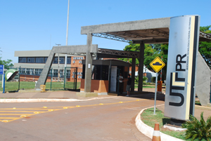
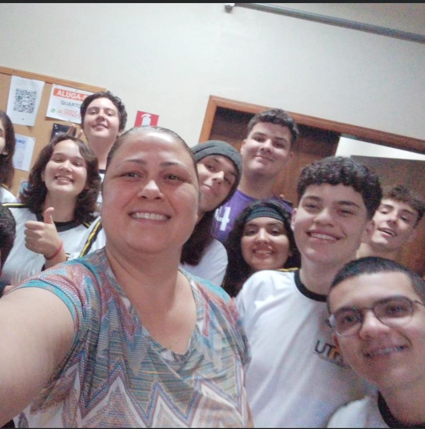

Universidade Tecnológica Federal do Paraná

A UTFPR, ou Universidade Tecnológica Federal do Paraná, é uma instituição de renome no Brasil, conhecida por
sua ênfase em ciência, tecnologia e inovação. Fundada em 1909, a universidade tem uma longa história de
contribuições para o avanço do conhecimento e para o desenvolvimento tecnológico do país.
O campus de Campo Mourão é uma das unidades da UTFPR e oferece o curso Técnico Integrado em Informática para
a Internet. Esse curso é projetado para proporcionar aos estudantes uma formação abrangente ao longo de
quatro anos, combinando disciplinas do ensino médio com matérias específicas da área técnica.
Durante os primeiros anos, os alunos recebem uma base sólida em disciplinas do ensino médio,
proporcionando-lhes uma educação geral e equilibrada. À medida que avançam no curso, eles também se dedicam
a matérias específicas da área de Informática para a Internet, que incluem tópicos como programação,
desenvolvimento web, redes de computadores, entre outros.
Uma característica distintiva desse curso técnico integrado é que, ao final dos quatro anos, os estudantes
obtêm não apenas o diploma de ensino médio, mas também o certificado técnico. Essa abordagem integrada visa
preparar os alunos para enfrentar os desafios do mercado de trabalho, oferecendo uma combinação valiosa de
conhecimentos acadêmicos e habilidades técnicas.
Além disso, a UTFPR geralmente promove atividades extracurriculares, eventos acadêmicos e oportunidades de
estágio para enriquecer a experiência educacional dos estudantes. Essas iniciativas visam não apenas
fornecer conhecimento teórico, mas também promover a aplicação prática dos conceitos aprendidos em sala de
aula.
Assim, o curso Técnico Integrado em Informática para a Internet da UTFPR em Campo Mourão busca formar
profissionais capacitados e preparados para atuar no dinâmico setor de tecnologia da informação e internet.
Disciplinas
Desenvolvimento Web 1

A disciplina de Desenvolvimento Web 1, lecionado pelo professor Rafael Liberato, oferece fundamentos no vasto universo da criação de páginas e aplicações web.
Os estudantes são guiados através dos
ensinamentos essenciais que sustentam a arquitetura da web, desde os princípios básicos de HTML e CSS até a introdução ao JavaScript.
Durante a disciplina, os alunos têm a oportunidade de criar seus próprios projetos práticos,aplicando os conhecimentos adquiridos em aula.
Língua Portuguesa, Literatura E Produção Textual 3

A disciplina de Língua Portuguesa, Literatura e Produção Textual 3, lecionado pela professora Sandra Aleixo, oferece ensinamentos sobre a linguagem e a expressão literária. Com enfoque na língua portuguesa, a disciplina abrange desde as estruturas gramaticais até a análise crítica de obras literárias, proporcionando aos alunos uma compreensão abrangente e aprofundada da língua e da cultura.
A importância da disciplina vai além do aprimoramento da comunicação escrita com atividades práticas de oralidade.